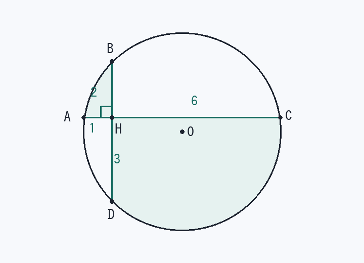

第4回 直交する2弦と網目部分の面積（方べきの定理）
円 O の2つの弦 AC、BD が点 H で直交している。AH = 1、BH = 2、DH = 3 のとき、
(1) 円 O の面積を求めよ。
(2) 網目部分 ABHDCH の面積を求めよ。
(1) 円 O の面積を求めよ。
(2) 網目部分 ABHDCH の面積を求めよ。

解法の型
交わる2弦 → 方べきの定理 AH × HC = BH × HD で足りない長さを出す。
円の面積は r を出さず r² を出す（弦の垂直二等分線は中心を通る → 直交する2弦なら座標が最速）。
曲線でかこまれた面積は「扇形 − 三角形（弓形）」＋「直線図形」に切り分ける。
(1) 円 O の面積
- 方べきの定理で HCAH × HC = BH × HD
1 × HC = 2 × 3 → HC = 6 （よって AC = 1 + 6 = 7） - H を原点にとるA(−1, 0)、C(6, 0)、B(0, 2)、D(0, −3) （AC を x 軸、BD を y 軸）
- 弦の垂直二等分線で中心 O
弦 AC の中点の x 座標 = (−1 + 6) / 2 = 5/2
弦 BD の中点の y 座標 = (2 − 3) / 2 = −1/2
O(5/2, −1/2)中心から弦におろした垂線は弦を2等分する、を x 方向・y 方向で1回ずつ使うだけです。
- r² を出すr² = OA² = (5/2 + 1)² + (1/2)² = 49/4 + 1/4 = 50/4 = 25/2
- 面積円 O = πr² = 25π/2
検算：B(0, 2) でも (5/2)² + (2 + 1/2)² = 25/4 + 25/4 = 25/2。A・B・C・D の4点すべてで r² = 25/2 になります。
(2) 網目部分の面積
- 2か所に切り分ける
網目 = (扇形OAB − △OAB + △ABH) + (扇形OCD − △OCD + △CDH)
弓形 = 扇形 − 中心を頂点とする三角形。それに交点 H 側の直角三角形を足します。
- 扇形2つの合計は円の半分
AC ⊥ BD より 弧AB + 弧CD = 半円 → ∠AOB + ∠COD = 180°
扇形OAB + 扇形OCD = πr² / 2 = 25π/4中心角を個別に出す必要はありません。ここが要領です。
- △OAB + △OCD
A − O = (−7/2, 1/2)、B − O = (−5/2, 5/2)
△OAB = ½|(−7/2)(5/2) − (1/2)(−5/2)| = ½ × 15/2 = 15/4
C − O = (7/2, 1/2)、D − O = (−5/2, −5/2)
△OCD = ½|(7/2)(−5/2) − (1/2)(−5/2)| = 15/4
合計 = 15/2 - △ABH + △CDH（直角三角形）△ABH = ½ × 1 × 2 = 1 △CDH = ½ × 6 × 3 = 9
合計 = 10 - 足し合わせる網目 = 25π/4 − 15/2 + 10 = 25π/4 + 5/2
検算：円の面積は約39.3、網目は約22.1。円の半分よりやや大きいくらいで、図の見た目と合います（答えは近似せず 25π/4 + 5/2 のまま書く）。
覚えるべきこと（在庫に入れる1行）
交わる弦は方べき／円の面積は r² だけ出す／曲線の面積は「弓形＝扇形−三角形」に切る
類題（翌日、何も見ずに）
- 同じ図で、△ABH と △CDH の相似比と面積比。
答え
∠AHB = ∠CHD = 90°、AH : BH = 1 : 2、CH : DH = 6 : 3 = 2 : 1 なので相似ではない（∠BAH と ∠DCH は等しくない）。面積比は 1 : 9。
- AH = 2、BH = 3、DH = 4 のとき、円の面積。
答え
HC = 6、O(2, −1/2) より r² = 4² + (1/2)² = 65/4、面積 65π/4。